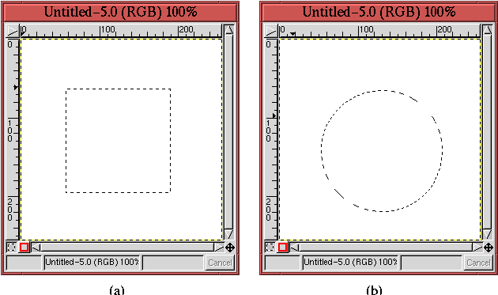
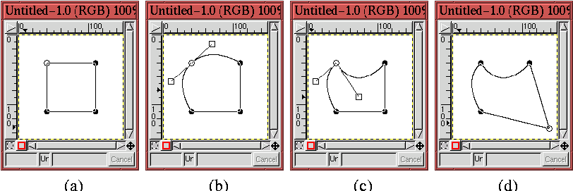

There are two types of selection tools. The first type works by drawing lines that separate the selection subject from its background. The second type makes a selection by specifying a representative seed pixel from the subject. The selection is then made automatically by including other pixels in the image that are sufficiently similar to the seed in color.
A goal of this chapter is to explain how to decide which type of selection tool should be applied. Often it is some combination that is the most effective. The decision is partially based on evaluating the characteristics of the subject that best differentiate it from the background. These could be a combination of its color, shape, value, or saturation (for more on the characteristics of color, value, and saturation, see Chapter 5). For difficult selections it is often necessary to experiment in order to discover the most effective approach.
In this section we start to develop our skills by reviewing the GIMP's
basic selection tools and by exploring their underlying strengths and
weaknesses. To begin, we discuss the six selection tools found in the
GIMP Toolbox, shown in Figure 3.1. They
consist of the Rectangle Select,
The Rectangle Select and Ellipse Select tools are used for selecting rectangular and elliptical regions in an image. A selection is initiated by clicking and dragging in the image window, and the selection is completed by releasing the mouse button. The selection process is interactively facilitated by an outline of the selection that can be seen while the mouse is being dragged.
Figure 3.2 shows examples of both the
Rectangle Select and Ellipse Select tools.
A perfectly square selection can be made with the Rectangle Select tool, and a perfectly circular selection can be made with the Ellipse Select tool. The trick is to use the Shift key, but read on carefully. Two other selection tricks are also performed with the Shift key (see Section 3.2 for the other). To avoid confusion, it is important to pay close attention to how this works.
To obtain a perfectly square or circular selection, begin the
selection by clicking and dragging in the image window. While the
mouse button is down, press the Shift key. In the image window,
the resulting selection shape becomes a perfectly square or circular,
depending on the tool you are using. The Shift key must remain
pressed until the selection is finished and the mouse button has been
released. Only then may the Shift key be released. If the Shift key
is released before the left mouse button, the selection will revert to
a normal rectangle or ellipse selection. The results of using the
Shift key with the Rectangle Select and Ellipse Select
tools are illustrated in Figure 3.3.
|  |
Instead of initiating a rectangular or elliptical selection at one corner and terminating at the opposite one, it is also possible to initiate from the selection's center, terminating at a corner. The trick for this is similar to the technique just described for creating a perfectly square or circular selection. It is done by pressing the Control key after initiating the selection with the left mouse button. The Control key must remain pressed until after the mouse button is released. To combine perfectly square or circular selections in conjunction with center initiated ones, the Shift and Control keys must both be pressed after the left mouse button is clicked and remain so until after the mouse button is released.
The Lasso is used to draw free-hand selections. Although its official name is the Free-Hand Selection tool, the Lasso will be preferred in this book because the tool's icon in the Toolbox resembles a lasso (and it's also a lot shorter to type).
The Lasso is used by clicking and dragging in the image window,
tracing out the shape to be selected. Releasing the mouse button
completes the selection. While tracing with the Lasso, the
outline of the selection can be seen, and, when completed, the
selection is shown by the Marching Ants.
Figure 3.4
The advantage of the Lasso is that it can be used to select arbitrarily complex objects. The disadvantage is that the work can be painstakingly slow, requiring extremely fine control of the mouse. Even the small selection shown in Figure 3.4 was difficult, because the tree's outline is so jagged and rough. Another aspect of the Lasso that makes it difficult for precision work is that the mouse button cannot be released while the selection is being made. This precludes using this tool for making large, complicated selections. For these reasons, the Lasso will not be our selection tool of choice for fine-grain work. Rather, it will mainly be used to rough-out selections around complicated shapes or for completing work on masks. A good example of the latter use of the Lasso is demonstrated in Sections 4.5.3 and 7.4.
Although its name is officially the Fuzzy Select tool, the Magic Wand will be preferred in this book because the tool's icon, as shown in the Toolbox, resembles a magic wand. The Magic Wand makes selections based on specifying a seed pixel in the image. The seed is the first selected pixel, and the pixels directly adjoining the seed are included in the selection if their colors are sufficiently close to the color of the seed. This creates a second set of selected pixels. This process is repeated with the neighboring pixels of the second selected set, and so on, until no more pixels can be added.
Figure 3.5 illustrates how the Magic
Wand works.
So, how much lower and higher can adjoining pixel colors be and still be included in the selection? This is specified by the Magic Wand's selection threshold, which, as shown in Figure 3.5(b), can be set with the Threshold slider in the Tool Options dialog (see Section 3.1.2 for more on this). It can also be set interactively with the mouse. The threshold is set interactively by keeping the left mouse button pressed when selecting the seed pixel. When the outline of the selection appears, and with the left mouse button continually pressed, the mouse can be moved either to the right (or downward) to increase the threshold or to the left (or upward) to diminish it. Increasing the threshold results in a larger selection, and decreasing it, a smaller one. Changing the threshold should be done by moving the mouse in small increments so that the changes in the selected region can be carefully controlled.
The Magic Wand is a conceptually attractive tool. In principle, it automatically makes the selection by grouping pixels that are similar in color and that are spatially connected, being grown from a seed pixel. In practice, however, it is often difficult to get good results with the Magic Wand. This is because it is hard to find the seed pixel and threshold pair that will produce the selection we want. As an example, imagine a subject you want to select using the Magic Wand and that has pixel color values ranging from X to Y. To make the selection with the Magic Wand, a pixel whose value is exactly midway between X and Y must be selected as the seed. But how do we determine what X and Y are for our subject, and how do we find the pixel in the subject that has the midway value? These practical problems are not easily solved!
Fortunately there is another tool in the GIMP that allows you to more easily exploit the color-grouping selection concept. This tool is called Threshold and is found in the Image:Image/Colors menu. Its use is presented in Section 4.5.3.
The Bezier Path selection tool is very powerful. It is the only selection tool that allows the interactive adjustment of the selections it makes. The Bezier Path tool works by placing control points on an image. These are initially connected by straight-line path segments; however, using the control handles hidden inside each control point, the path segments can be made to curve in practically arbitrary manners. By using a Bezier path, an initial selection can be interactively corrected until the final result fits the desired selection like a glove.
Figure 3.6
|  |
While constructing a Bezier path, the mouse cursor appears as an arrow, with a filled circle just below and slightly to the arrow's right. This circle indicates that the path is not closed and that the next mouse click will create a new control point. Note that Bezier paths need not be closed. This is discussed in more detail in Section 3.4, which describes the Paths dialog.
The path segments between control points can be made to curve by manipulating the points' control handles. For a closed Bezier path, the control handles are made visible by clicking on a control point and dragging. Figure 3.6(b) shows how the control handles for the upper-left corner of the Bezier path have been pulled out of that control point. The dragging action of the mouse positions one of the control handles while the other moves in tandem with, but diametrically opposite, the first. As can be seen in Figure 3.6(b), the two path segments attached to the control point are made to curve by the action of the control handles.
Note that the control handles do not disappear once the mouse button has been released and that the handles can be readjusted at any time by clicking the mouse on either handle and dragging. However, only one set of handles may be visible at once. Clicking on another control point displays its handles while toggling off the visibility of the handles for any other point. Also note that when the mouse cursor is close enough to a control point or control handle to manipulate it, the cursor changes from an arrow with a filled circle below it to an arrow with the outline of square. Because control handles resemble squares, this special cursor is a useful way to indicate that the mouse cursor is close enough to the control point for the handles to be active.
The two control handles for a point can be moved independently of each other by using the Shift key. Pressing the Shift key while dragging a handle with the mouse makes that handle move while the other remains stationary. Moving a single control handle in this way allows the curvature of a single path segment to be manipulated. Figure 3.6(c) shows the result of using the Shift key to move one of the control handles independently of the other. Note how this changes the curve of the upper segment of the square while leaving the curve of the left segment as it was.
It is also possible to reposition a control point. This is done by pressing the Control key before clicking on a control point. Dragging the mouse while the mouse button and Control key are pressed moves the control point. The result of repositioning a control point is shown in Figure 3.6(d).
After creating a Bezier path with all the control points properly positioned and all the path segments appropriately curved, it may then be converted to a selection. This is done by clicking inside the closed path. Note that when the mouse cursor is moved inside the closed path, the cursor changes to an arrow with the outline of a dashed rectangle below it. The dashed rectangle resembles the Marching Ants, which will appear when the Bezier path is converted to a selection.
Figures 3.7 through 3.9
show the application of the Bezier Path tool in a practical
example. Figure 3.7 shows that a closed
Bezier path has
As just described, the Bezier path can be adjusted to the shell's
shape by manipulating the control handles. The first pair of handles
are shown in Figure 3.8.
After adjusting the control handles for each point in the Bezier path
it is converted to a selection. The result, showing the Marching
Ants, is illustrated in Figure 3.9.
A practical question is where should the control points be placed? Another is how many control points are necessary to adequately select a shape? For the placement of control points here are some rules of thumb:
The number of control points needed to adequately adjust a Bezier path to a shape is a more difficult question. Figure 3.10(c) shows that a pair of control points are all that is needed to create a circle. Thus, a single control point can cover up to 180 degrees of curve. However, this doesn't account for all curve characteristics. I personally like to place control points as the shape of my selection passes through 90 degrees of curve. This personal rule is borne out in the sea turtle selection shown in Figures 3.7.
In any case, the issue of the number of points required for a shape is not critical because it can be resolved using the Add Point and Delete Point functions available in the Paths dialog. These are discussed in detail in Section 3.4.
In principle the Intelligent Scissors is supposed to work by following, as closely as possible, constant-valued color contours in the image between subsequent points clicked by the mouse. However, at the time of this writing, the Intelligent Scissors is a GIMP tool that seems to be broken. Much perplexed discussion has passed through the GIMP developers' mailing list on this tool and, unfortunately, it seems that for the present this tool has little or no value. Even if the tool did work, I would still rank it as a tool of little utility.
Double-clicking on any of the Toolbox icons brings up the Tool Options dialog for that tool. For selection tools the important options are Antialiasing, Feather, Sample Merged, and Threshold. Each of these is discussed in this section.
Antialiasing is an important edge treatment for selections.
Figure 3.11
For example, let's assume that white represents a selected pixel and black an unselected one. Figure 3.11(b) shows what happens if pixels are included in the selection when more than 50% of the pixel is above the selection edge and unselected otherwise. This seems like a reasonable criterion, however, notice that the selection edge obtained by applying this rule produces a staircase effect on the edge. This staircase effect, known as aliasing, makes the edge look harsh. We'll see this in a more realistic example in a moment.
Alternatively, Figure 3.11(c) illustrates the concept of antialiasing. Here white represents a pixel which is fully selected, black one that is fully unselected, and gray represents partially selected pixels, where the level of gray indicates the percentage of the pixel that falls inside the selection. Thus, a lighter value of gray indicates a more fully selected pixel and a darker value a less selected one. Assigning gray values to partially selected pixels has the effect of visually smoothing the staircase effect illustrated in Figure 3.11(b), which is why this is called antialiasing.
The way antialiasing is actually implemented is by using the layer's alpha channel. Alpha channels were introduced in Section 2.2 and a more comprehensive presentation of them is given in Chapters 4 and 5. However, for the purposes of discussing antialiasing it is sufficient to know that the white pixels in Figure 3.11(c) represent pixels that are fully opaque, the black pixels those that are fully transparent, and the gray pixels those that are partially opaque (or transparent).
Figure 3.12
Figures 3.12(c) and (d) show zoomed versions of Figures 3.12(a) and (b). The staircase effect can be clearly seen in Figure 3.12(c). Alternatively, in Figure 3.12(d) there are black, edge pixels that are partially transparent and that allow part of the yellow background to show through. Figures 3.12(b) and (d) demonstrate that antialiasing really does improve the aesthetic appearance of the selection edge. Figure 3.12(e) shows that the Antialiasing checkbox in the Tool Options dialog for the Ellipse Select tool is toggled on for Figures 3.12(b) and (d). For all the selection tools, Antialiasing is on by default.
As a final remark, note that the Rectangle Select tool does not have an antialiasing option. This is normal because this selection tool can never produce sloping edges. Consequently, the staircase problem illustrated in Figure 3.11 can never occur, and antialiasing is not needed.
Feathering is a selection edge treatment similar to antialiasing. It
works by changing the alpha value of pixels as a function of their
radial distance from the selection edge.
Figure 3.13
As shown in Figure 3.13(b), a value of 40 has been chosen for the Feather Radius in the Tool Options dialog for this selection tool. Furthermore, Antialiasing has been turned off. The result of inverting the selection and cutting away the background is shown in Figure 3.13(c). This result is actually displayed on a yellow background so that the transparency of the flower pixels can be better seen. Also, superimposed on Figure 3.13(c) is the original elliptical selection.
The transparency of the flower image shown in Figure 3.13(c) is 50% at the selection edge. The transparency increases moving outward from the edge and decreases moving inward from it. The rate at which the transparency changes while moving away from the selection edge is determined by the Feather Radius. For this example, the value chosen is 40, meaning that there is a feathering effect up to 40 pixels away in both directions from the selection edge. Note that for all the selection tools, feathering is off by default.
Partially selected pixels are discussed again in Section 4.1.7.
Normally the Magic Wand selection tool only operates on the
pixel values in the active layer. However, if this layer is not fully
opaque, or if this layer is using a blending mode (see
Chapter 5), some of the pixel values from lower
layers affect the color in the active layer. The Sample Merged option
in the Tool Options dialog for the Magic Wand takes this
into account. When this option is on, it is the merged color values
of pixels that are used in the comparison algorithm for the Magic
Wand. Figure 3.14
As described in Section 3.1.1, the Magic Wand uses a search algorithm based on the color of a seed pixel and a specified threshold value. All contiguous pixels that have color values that are less than the threshold from the seed are included in the selection. As already described, the Threshold can be set interactively. However, it can also be specified in the Magic Wand's Tool Options dialog. Figure 3.14 illustrates the Threshold slider which can take values from 0 to 255.